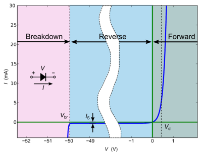

In electronics, a diode is a two-terminal electronic component that conducts primarily in one direction (asymmetric conductance); it has low (ideally zero) resistance to the flow of current in one direction, and high (ideally infinite) resistance in the other.
The most common function of a diode is to allow an electric current to pass in one direction (called the diode's forward direction), while blocking current in the opposite direction (the reverse direction). Thus, the diode can be viewed as an electronic version of a check valve. This unidirectional behavior is called rectification, and is used to convert alternating current (AC) to direct current (DC)
When the n-type and p-type materials are attached together, a momentary flow of electrons occur from the n to the p side resulting in a third region between the two where no charge carriers are present. This region is called the depletion region because there are no charge carriers (neither electrons nor holes) in it.
For each electron–hole pair recombination made, a positively charged dopant ion is left behind in the N-doped region, and a negatively charged dopant ion is created in the P-doped region. As recombination proceeds and more ions are created, an increasing electric field develops through the depletion zone that acts to slow and then finally stop recombination. At this point, there is a "built-in" potential across the depletion zone. For silicon diodes, the built-in potential is approximately 0.7 V and 0.3 V for germanium.
When a sufficiently higher electrical potential (greater than built-in potential) is applied to the P side (the anode) than to the N side (the cathode), it allows electrons to flow through the depletion region from the N-type side to the P-type side and the diode is said to be forward biased.
The junction does not allow the flow of electrons in the opposite direction when the potential is applied in reverse and the diode is said to be reversed biased.
